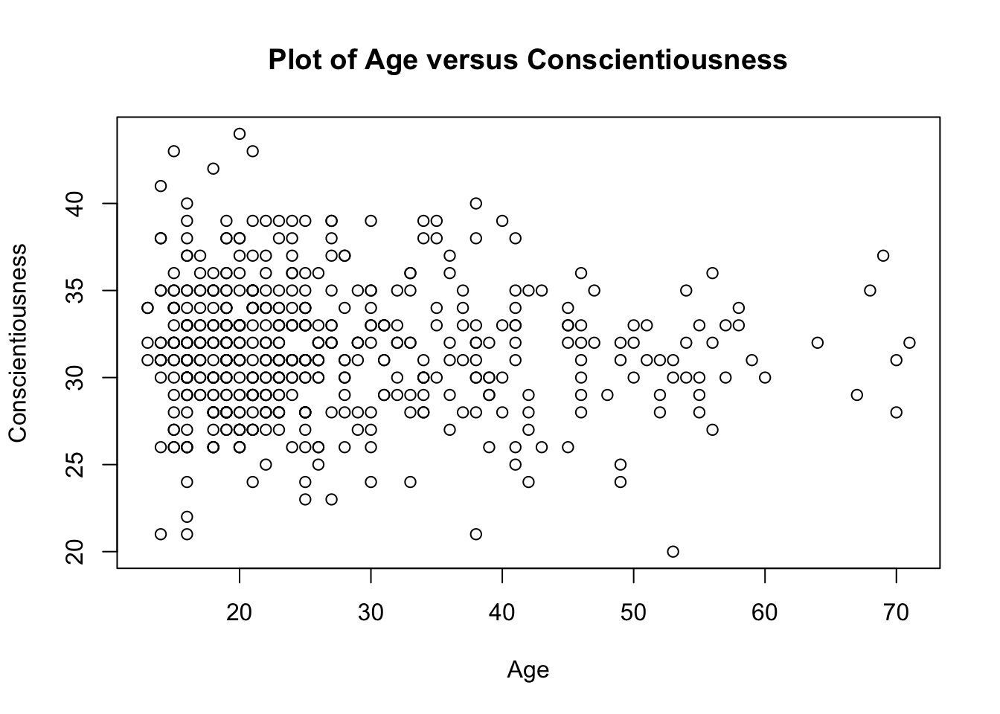
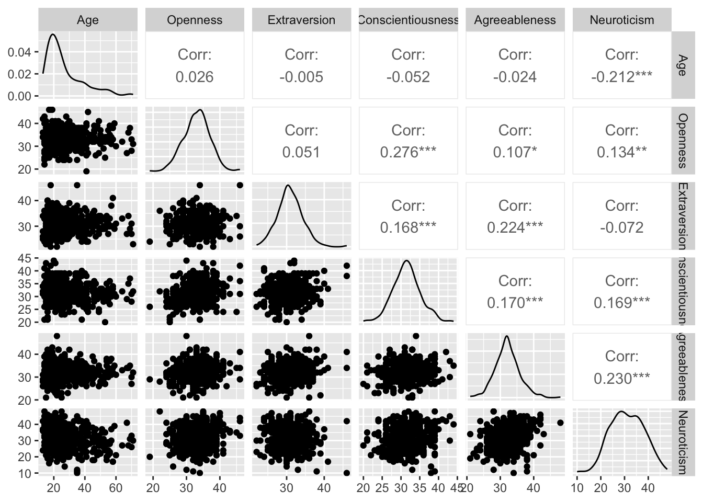
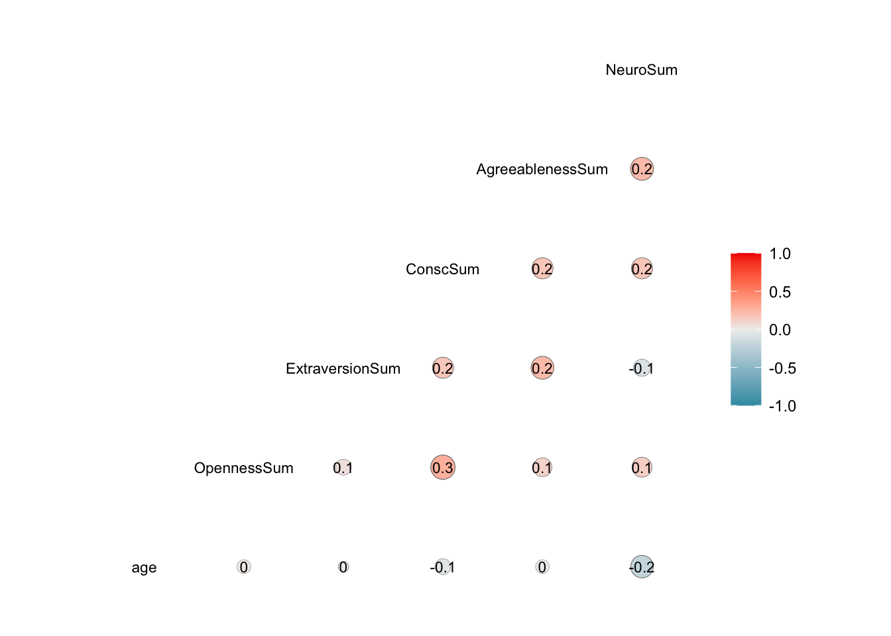
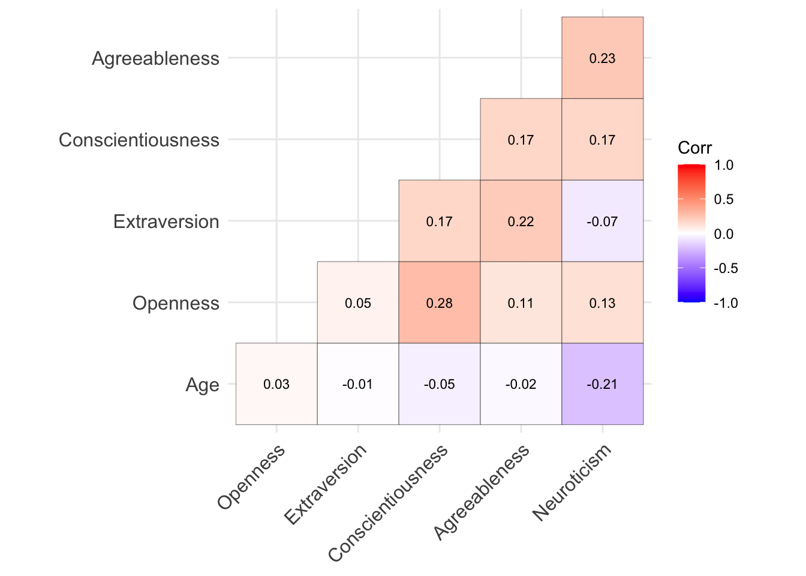
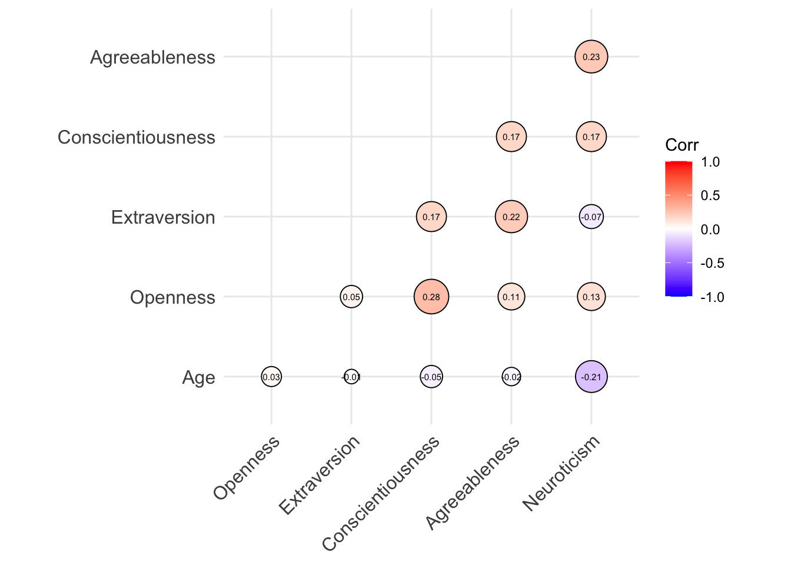

6 Correlation and Tests of Correlations
library(ggplot2) # for general data visualization
library(rstatix) # correlation test of multiple pairs at once
library(GGally) # for pairwise scatterplots
library(ggcorrplot) # for heat map visualizationCorrelation allows us to understand the level of linear relation between two continuous variables. It ranges from -1 to 1, where negative values indicate negative relations (as one variable increases, the other variable decreases) and positive values indicate positive relations (as one variable increases, the other variable also increases). Correlations closer to -1 or 1 indicate stronger relations, whereas correlations closer to 0 indicate weaker relations.
Some important things to note about correlations:
- Correlations represent linear relations. This means that your variables may have a non-linear relation, but it is not captured by the correlation (check out [Anscombe’s Quartet[(https://en.wikipedia.org/wiki/Anscombe%27s_quartet)] for an example of this). It’s important to plot your data to see!
- Correlations represent relations between continuous variables. If you have ordinal data with more than 5 levels, it is generally ok to still estimate correlations with this.
- Correlation is a non-directional relation: You are only looking at how one variable changes as the other variable goes up or down. You are not able to see how one variable predicts the other.
6.1 Estimating Correlations
Suppose that we were interested in the relation between age and each of the Big 5 traits. First, as I mentioned, it is important to plot your data before calculating a correlation, to ensure the relations are roughly linear. Let us start by focusing on the relation between age and Conscientiousness.
plot(x = big5$age, big5$ConscSum,
xlab = "Age", ylab = "Conscientiousness",
main = "Plot of Age versus Conscientiousness")
Now that we know the relation is linear enough, we can calculate a correlation.
To estimate a correlation, we use the cor function.
cor(x = big5$age, y = big5$ConscSum)## [1] -0.0518399This function takes two arguments: x and y, which refer to the two variables you want to find the correlation between. If you don’t want to use the Pearson correlation, and instead want to use the Spearman correlation (good if your data are non-normal or ordinal) or Kendall correlation, you can specify this using the method argument.
The output is the estimated Pearson correlation. In this case, that is -.05, which means that are two variables are weakly negatively related. In other words, as age increases, people’s Conscientiousness decreases, but this relation is almost non-existent (which is not too surprising based on the plot).
However, we’re often not just estimating one correlation, but multiple. It would be extremely tedious (and error-prone) to copy-and-paste the cor function over and over again. Luckily, we can get what is known as a correlation matrix by simply giving the cor function a dataframe, and it will estimate all pairwise correlations.
To plot all pairwise combinations of variables at once, we can use a few different functions:
6.1.1 Option 1: Base R
Using the pairs function in base R will get you the scatterplots of each pairwise combination of variables (e.g., for variables X, Y, and Z, this will plot X versus Y, X versus Z, and Y versus Z) but not much else.
The arguments of the pairs function is mainly the dataframe you want to plot, as well as (optionally) the labels for your variable names.
pairs(x = big5[,c("age", "OpennessSum", "ExtraversionSum", "ConscSum", "AgreeablenessSum", "NeuroSum")],
labels = c("Age", "Openness", "Extraversion", "Conscientiousness", "Agreeableness", "Neuroticism"))
6.1.2 Option 2: ggplot
If we wanted some more information (e.g., the distribution of each variable on its own, and the estimated correlation), we could use the ggpairs function, which is from the GGally package, but works with ggplot to create a prettier plot.
Just like the pairs function, all you need to give ggpairs is the dataframe with the variables you want to make pairwise scatterplots from. You can also add labels using the columnLabels argument.
ggpairs(big5[,c("age", "OpennessSum", "ExtraversionSum", "ConscSum", "AgreeablenessSum", "NeuroSum")],
columnLabels = c("Age", "Openness", "Extraversion", "Conscientiousness", "Agreeableness", "Neuroticism"))
Now you can see we have a lot more information: In addition to the same scatterplots we had before, we now have the distribution of each individual variable (so we can see if it’s normally distributed or skewed), plus an estimate of the correlation between each variable pair (stars indicate whether that correlation is statistically significant from 0 or not).
Once we’ve glanced at our data plot and assessed whether correlations between these variables make sense, we can calculate the correlation matrix (I wrapped this in a round statement so the final result is easier to read):
round(cor(big5[, c("age", "OpennessSum", "ExtraversionSum", "ConscSum", "AgreeablenessSum", "NeuroSum")], use = "everything"), 2)## age OpennessSum ExtraversionSum ConscSum AgreeablenessSum
## age 1.00 0.03 -0.01 -0.05 -0.02
## OpennessSum 0.03 1.00 0.05 0.28 0.11
## ExtraversionSum -0.01 0.05 1.00 0.17 0.22
## ConscSum -0.05 0.28 0.17 1.00 0.17
## AgreeablenessSum -0.02 0.11 0.22 0.17 1.00
## NeuroSum -0.21 0.13 -0.07 0.17 0.23
## NeuroSum
## age -0.21
## OpennessSum 0.13
## ExtraversionSum -0.07
## ConscSum 0.17
## AgreeablenessSum 0.23
## NeuroSum 1.00Notice that instead of giving an x and y, I just gave one argument, which is the dataset (of the specific columns I want). This tells R to calculate all possible correlations between the columns in that dataset.
Since I am now working with different columns, which might have different patterns of missingness, it is also important to specify the “use” argument: “everything” or “all.obs” will use all possible observations, “complete.obs” will only use participants who have complete data on all variables, and “pairwise.complete.obs” will calculate correlations for each pair of variables using participants who have complete data on that pair (this means that different people may be used to calculate each correlation).
Examining the correlation matrix, we can see the diagonal elements are all 1. This makes sense: a variable is perfectly related to itself. The more interesting part is the off-diagonal elements: looking at these, we can see most correlations range from weak to medium, and the highest correlation is 0.28 (between Openness and Conscientiousness). Also, the values above the diagonal are the same as those below the diagonal - this is because the correlation between X and Y is the same as the correlation between Y and X.
6.2 Tests for Correlations
Although we were able to estimate the correlations and eyeball whether they are weak, medium, or strong, we are more likely to test whether or not a correlation is equal to zero or not. This is because, in real data, no correlation will be exactly equal to 0: it may be very small, but still non-zero. Conversely, a correlation may seem to be of medium strength, but there is so much sampling variability present that we cannot say the correlation is significantly different from 0.
To test whether correlations are significantly different from 0, we use the cor.test function. This function takes the same arguments as the cor function we used earlier.
cor.test(big5$age, big5$ConscSum)##
## Pearson's product-moment correlation
##
## data: big5$age and big5$ConscSum
## t = -1.1584, df = 498, p-value = 0.2473
## alternative hypothesis: true correlation is not equal to 0
## 95 percent confidence interval:
## -0.13889907 0.03601441
## sample estimates:
## cor
## -0.0518399You see that we get the same estimate of the correlation we got before (-.05), but now we have additional information: a t-statistic, the associated df, the p-value for the hypothesis test, and the 95% confidence interval.
In this case, our p-value is .25. Since this is larger than the conventional alpha of .05, we fail to reject the null: there is not enough evidence that this correlation between age and conscietiousness is significantly different from 0.
What about all the other correlations? The cor.test function will not work here - you can only calculate a correlation between one pair of variables t a time.
Luckily, there is another function in the rstatix package, called cor_test (that’s not confusing at all).
cor_test(big5, vars = c("age", "OpennessSum", "ExtraversionSum", "ConscSum", "AgreeablenessSum", "NeuroSum"),
vars2 = c("age", "OpennessSum", "ExtraversionSum", "ConscSum", "AgreeablenessSum", "NeuroSum"),
use = "everything")This function returns an estimate of the correlation, the test statistic, the p-value, and confidence interval for each pair of variables.
6.3 Visualizing Correlations
Although scatterplots made using the pairs or ggpairs functions are common ways to visualize the associations between variables, another popular approach is to create a heat map or correlelogram. These allow us to take advantage of the fact that people perceive color/size pretty quickly, so it uses different shades of a color or different sizes of some shape to indicate how strong a correlation between two variables is.
Heat maps use just color to differentiate the strength of correlations. To create a heat map, there are a few different packages and functions you can use (including ggcor in the GGally package we used earlier). Another option is the ggcorrplot package, which contains the ggcorrplot function.
With the ggcorrplot function, you need to provide the correlation matrix of your dataset to the corr argument. However, this will plot the entire correlation matrix, even though the entries above and below the diagonal contain redundant information. So I recommend setting another argument, type, to “lower” (only plot correlations below the diagonal) or “upper” (only plot correlations above the diagonal).
cor_matrix = cor(big5[, c("age", "OpennessSum", "ExtraversionSum", "ConscSum", "AgreeablenessSum", "NeuroSum")], use = "everything")
# In the heat map, the names of your variables will be taken from the correlation matrix - therefore, I am renaming them below just to make them nicer to read
rownames(cor_matrix) = colnames(cor_matrix) = c("Age", "Openness", "Extraversion", "Conscientiousness", "Agreeableness", "Neuroticism")
# make the heat map
ggcorrplot(corr = cor_matrix,
type = "lower",
outline.color = "black")
With this heat map, reddish values correspond to positive correlations, while bluish colors correspond to negative correlations. The darker the color, the stronger (closer to -1 or 1) the correlation is. This allows us to, at a glance, assess the relations between our variables.
[As a side note, you can change the colors if you prefer, by providing 3 colors (for negative, zero, and positive correlation values) to the colors argument in the ggcorrplot function.]
However, we have now lost information on the exact values of the estimated correlations. If we want that back, we can add another argument to the ggcorrplot function: lab = TRUE, which places the correlation coefficient on top of the plot.
ggcorrplot(corr = cor_matrix,
type = "lower",
outline.color = "black",
lab = TRUE,
lab_size = 3,
lab_col = "black")
# lab_size: How big do you want the labeled correlation coefficients to be
# lab_color: What color do you want the text for the correlation coefficients to beIf we wanted to use shape as well as color to help us evaluate our correlations, we could plot a correlelogram. Luckily, this can easily be done by setting method = “circle” in the ggcorrplot function.
ggcorrplot(corr = cor_matrix,
type = "lower",
method = "circle",
outline.color = "black",
lab = TRUE,
lab_size = 2,
lab_col = "black")Now, not only do darker or lighter colors tell us the strength of the correlation coefficient, but bigger circles correspond to stronger correlation coefficients as well!